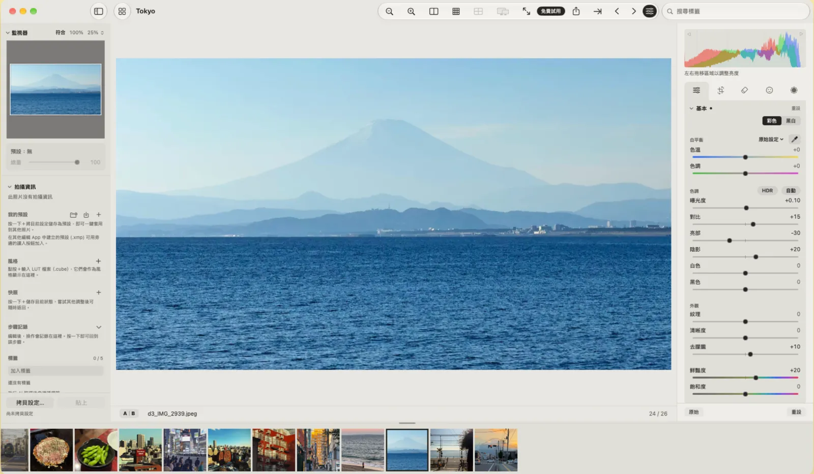

RAW
RAW 以為拍攝相機調校的色彩與亮度開啟。

內建 132 款相機描述檔
富士、Sony、Canon、Nikon、Hasselblad、DJI 與 iPhone，每款都校準了色彩與亮度。
不必更新 App 就能支援新相機
在設定中立即或每週檢查新的描述檔，之後開啟的照片即可套用。
支援保護亮部的拍攝模式
以 Canon 高光色調優先或富士 DR200/DR400 拍攝的照片，也會以你在相機上看到的亮度開啟。
常見 RAW 格式全都支援
CR3、CR2、NEF、ARW、RAF、RW2、ORF、DNG、3FR、IIQ 等。在 Mac 上，macOS 尚未支援的新相機，會改為編輯內嵌 JPEG 並告訴你。
JPEG、HEIC 等使用相同工具
JPEG、HEIC/HIF、PNG、TIFF、WebP 與 AVIF 也能使用與 RAW 相同的滑桿、遮色片與預設集。
以資料夾開啟的快速 RAW 編輯器
免費下載，30 天內免費試用所有功能。需要 macOS 26 或以上版本。 Windows 需 10（64 位元）或更新版本。